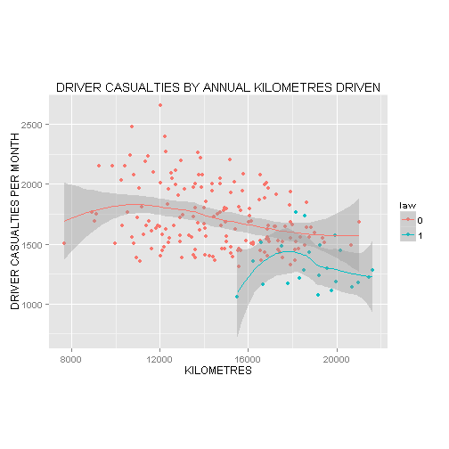

John Ware
library(ggplot2)
library(datasets)
Data <- data.frame(Seatbelts[ , c(2:6)], law = as.factor(Seatbelts[ ,8]))
TITLE <- "DRIVER CASUALTIES BY ANNUAL KILOMETRES DRIVEN"
XLAB <- "KILOMETRES"
YLAB <- "DRIVER CASUALTIES PER MONTH"
qplot(kms, drivers, data=Data, geom=c("point", "smooth"), method="loess",
col=law, main=TITLE, xlab=XLAB, ylab=YLAB, asp=0.8)

The data used by the App is derived from a study by A. C. Harvey and J. Durbin : 'The effects of seat belt legislation on British road casualties' (1986).